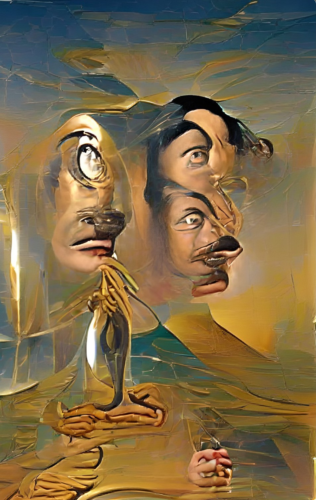

Doppelganger
The Doppelganger has always existed in the shadows of the other Spirits, copying their powers for his own uses.
Note: Requires at least one other spirit playing in the game.
SETUP:
Put 1 {presence} on your starting board in any land. Put 1 {presence} on a board with {presence} from another spirit in any land. Move one of that spirit's {presence} to the same land on your starting board instead of theirs.
Play Style:
Innately has no powers itself, and itself copies and uses powers played by other spirits to defend his lands.